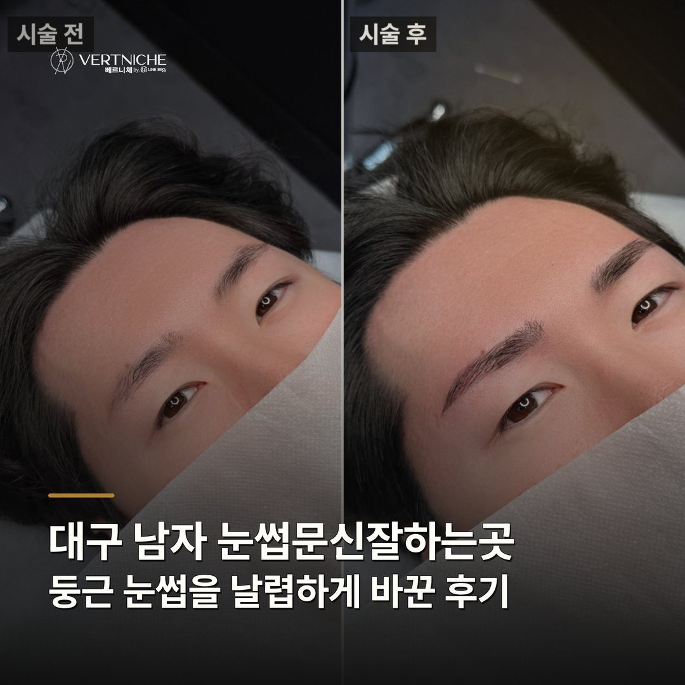

대구 남자 눈썹문신잘하는곳, 둥근 눈썹을 날렵하게 바꾼 후기

- 둥근 눈썹은 두껍게 덮기보다 안쪽 밀도로 날렵하게 끌고 간다
- 각은 억지로 만들지 말고 얼굴에서 나오는 각까지만 살린다
- 예전 색이 빠졌어도 재작업 가능하고 리터치까지 보며 28일 뒤 판단한다
10년 전 둥글게 받은 눈썹을 남성 라인으로 다시 잡은 과정을 정리했습니다. 기존 흔적을 어떻게 다루는지, 날렵한 라인은 어떤 기준으로 잡는지 실제 상담 흐름으로 풀었습니다.
둥근 눈썹을 날렵하게 바꾸려면 '덮기'보다 '밀도'로 가야 해요
둥근 눈썹을 각지게 커버하려고 두껍게 덧그리면 오히려 더 어색해집니다. 이게 재작업에서 제일 많이 하는 오해예요.
각을 '만드는' 게 아니라 '나오는 각'을 살리는 거예요
둥근 얼굴형이나 처진 라인에 억지로 뾰족한 각을 넣으면 얼굴이랑 따로 놀아요. 그래서 저는 자연스럽게 나오는 각도만 살리는 쪽으로 잡습니다.
예전 눈썹이 다 빠졌어도 다시 할 수 있어요
색이 거의 빠진 상태라면 오히려 새로 디자인하기 더 수월한 경우도 많습니다. 재도전을 겁내지 않으셔도 돼요.
둥근 흔적은 한 번에 다 못 지워요, 리터치로 맞춥니다
재작업은 첫 시술에서 완성하기보다 리터치까지 보고 밀도를 맞추는 게 맞아요. 둥근 흔적을 덮는 작업은 한 번에 과하게 진하게 넣으면 색을 다시 빼기 어렵기 때문입니다.
상담 때 확인할 것
- 잔흔 농도 — 예전 색이 얼마나 남아 있는지 눈으로 확인
- 미간 넓이 — 시작점을 어디에 둘지 기준
- 끝라인 상태 — 뭉툭한 구간을 어디까지 정리할지
- 원하는 인상 — 각을 어디까지 살릴지 서로 맞춤
- 리터치 여유 — 해외·출장 일정으로 재방문이 어려운지
자주 묻는 질문
예전에 둥글게 받은 눈썹, 흔적이 남아도 바꿀 수 있나요?
가능합니다. 흔적이 진하면 그걸 피해서 날렵한 라인을 설계하고, 옅으면 자연스럽게 흡수시켜요. 다만 둥근 흔적이 많이 진하면 한 번에 다 가리긴 어렵고, 리터치까지 보면서 맞추는 게 맞아요.
세안은 언제부터 해도 되나요?
시술 당일부터 세안은 가능해요. 다만 눈썹 부위는 피해서 하세요. 폼클렌징이 눈썹에 닿지 않게 하고 땀나는 운동이나 사우나는 2주 정도 미루시는 게 착색에 좋습니다.
리터치는 꼭 받아야 하나요?
착색이 잘 잡혔으면 굳이 안 하셔도 돼요. 재작업은 흔적을 덮는 작업이라 리터치가 필요한 경우가 좀 더 있지만, 그것도 28일 지나 보고 결정합니다. 색이 과해지면 오히려 부자연스러워지거든요.
요약입니다. 사례와 사진이 있는 전체 글은 네이버 블로그에서 볼 수 있습니다.